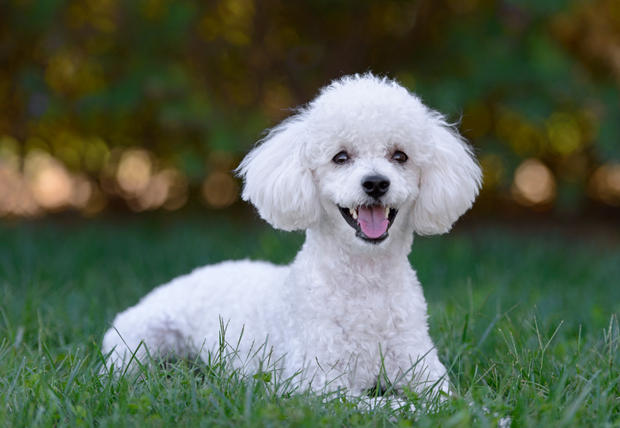

 Firulais, es un perro que rescatamos en la comuna de Recoleta, cuenta con sus vacunas al dia, y chip. es un perro bastante cariñoso, y con ganas de demostrar su felicidad y ganas de hacer una familia feliz.